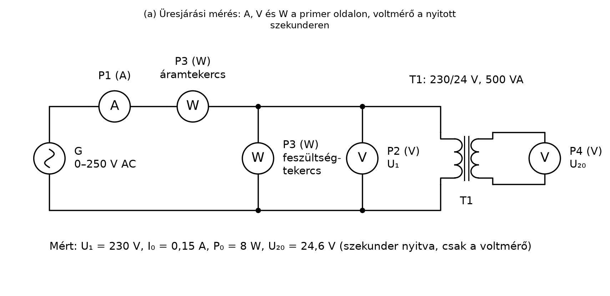

A szerelő gyakran találkozik olyan helyzettel, amikor egy transzformátort, motort vagy generátort nemcsak be kell kötni, hanem arról is meg kell győződni, hogy a gép belül egészséges, és a névleges adatai a valóságban is teljesülnek. Ilyen helyzet például:
A transzformátor és a villamos gép „adatlapnyi” jellemzői – üresjárási áram, vasveszteség, rövidzárási feszültség, tekercsveszteség, hatásfok, szigetelési ellenállás – méréssel ellenőrizhetők anélkül, hogy a gépet a névleges terheléssel kellene járatnunk. Ez a fejezet ezeket a mérési módszereket tanítja meg, a gyakorlati jegyzőkönyv elkészítésével együtt.
Képzeljünk el egy tanműhelyi mérőpadot. Rajta egy 230/24 V-os, 500 VA-es leválasztótranszformátor. A primer oldalra változtatható feszültségű váltakozó forrás, az áramkörbe ampermérő, a primer kapcsokra voltmérő és wattmérő van kötve. A mérést úgy kezdjük, hogy a szekunder oldal kapcsait nyitva hagyjuk. Amikor a primer feszültséget lassan 230 V-ra emeljük, a voltmérő a névleges feszültséget mutatja, az ampermérőn pedig egy kis, a névleges áramhoz képest néhány százalékos áramot olvasunk. Ez az üresjárási áram. A wattmérő néhány wattot mutat: ez a vasveszteség. Ha ezután a primer feszültséget nullára szabályozzuk és lekapcsoljuk, feszültségmentes állapotban a szekunder kapcsokat egy vastag, rövid vezetékkel összekötjük, majd a primer feszültséget nulláról csak annyira emeljük, hogy a névleges áram folyjon, a szükséges feszültség a névlegesnek csak néhány százaléka. Ez a rövidzárási feszültség. E két mérésből a transzformátor legfontosabb állapotjellemzői meghatározhatók.
Biztonsági korlát. A feladat tanműhelyi környezetre vagy jogosult oktató felügyeletére vonatkozik; hálózati feszültségen önállóan ne végezd. A méréshez a berendezést feszültség alá kell helyezni, ezért a mérőkapcsolás összeállítása és átalakítása előtt mindig feszültségmentesíteni kell.
A feszültségmentesítés öt biztonsági szabálya a mérési gyakorlatban is kötelező:
A mérőműszerek kiválasztásánál ügyeljünk a mérési kategóriára (CAT) és a mérőzsinórok állapotára; a mérési határértékeket mindig a várt érték fölé állítsuk, és a mérőműszer bekötését feszültségmentes állapotban végezzük. A wattmérő feszültségtekercsét a mérendő feszültségre párhuzamosan, áramtekercsét az árammal sorbakötjük, a bekötési pontok jelöléseit pedig a gyártói adatlap szerint követjük.
Szemléltető ábra – az üresjárási és a rövidzárási mérés teljes mérőkapcsolása:

A két rajz primer oldala azonos: a szabályozható AC forrásról a P1 ampermérőn és a P3 wattmérő áramtekercsén át (sorosan) jut az áram a transzformátorhoz, a P3 feszültségtekercse és a P2 voltmérő pedig a primer kapcsokra (párhuzamosan) csatlakozik. A különbség a szekunder oldalon van: üresjárásban a kapcsok nyitottak, csak a P4 voltmérő méri -at; rövidzárásban egy vastag vezeték zárja rövidre a tekercset. A mérés közben a szekunder oldali rövidzáró vezetéket úgy kell méretezni, hogy a névleges szekunder áramot melegedés nélkül elviselje.
A statikus ábra bal fele az üresjárást mutatja: a feszültséggel közel arányosan, a négyzetével nő, és 230 V-on éri el a mért -t és -ot. A jobb fele a rövidzárást: már -nál folyik a névleges , a felvett teljesítmény ekkor . A HTML-változatban a mérési mód és a primer feszültség csúszkával állítható; rövidzárásban a 13 V fölé emelt feszültségre az oldal figyelmeztet.
Az üresjárási mérés célja a vasveszteség, az üresjárási áram és az áttétel meghatározása.
Szabály. Az üresjárási mérés során a szekunder kapcsokat nyitva hagyjuk, a primer oldalra pedig a névleges frekvenciájú, névleges feszültségű táplálást kapcsolunk. A primer oldalon mérjük az feszültséget, az üresjárási áramot és a üresjárási teljesítményt, a szekunder oldalon pedig az üresjárási feszültséget.
A mérési elrendezésben a wattmérő a primer oldali hatásos teljesítményt méri. Mivel a szekunder oldalon nincs terhelés, a felvett hatásos teljesítmény majdnem teljes egészében vasveszteség: . A tekercsveszteség itt elhanyagolható, mert az üresjárási áram kicsi.
Az üresjárási áram százalékos értéke:
ahol a primer névleges áram. Az üresjárási teljesítménytényező:
Az áttétel közelítő értéke üresjárásban:
Példa. Egy 230/24 V-os, 500 VA-es egyfázisú transzformátor üresjárási mérésénél , , , . A névleges primer áram . Az üresjárási áram:
Az üresjárási teljesítménytényező:
Az áttétel:
A vasveszteség . Ez az érték a kistranszformátoroknál tipikusan a névleges teljesítmény 1–3%-a; itt , tehát elfogadható. ∎
A rövidzárási méréssel a névleges terheléshez tartozó tekercsveszteséget és a belső impedanciát határozzuk meg anélkül, hogy a transzformátort valódi terheléssel járatnánk.
Szabály. A rövidzárási mérés során a szekunder kapcsokat megfelelő keresztmetszetű vezetékkel rövidre zárjuk, a primer feszültséget pedig nulláról lassan addig emeljük, amíg a primer oldali áram eléri a névleges áramot. Az ehhez szükséges feszültség a rövidzárási feszültség, . Mérjük a primer feszültséget, a primer áramot és a felvett hatásos teljesítményt.
A mért hatásos teljesítmény ekkor a névleges áramhoz tartozó tekercsveszteség:
A rövidzárási feszültség százalékos értéke:
A rövidzárási impedancia a primer oldalra vonatkoztatva:
A rövidzárási ellenállás:
A rövidzárási reaktancia:
Példa. A fenti transzformátornál a szekunder oldalt rövidre zárjuk, majd a primer feszültséget addig emeljük, amíg a primer áram nem lesz. Ekkor , . A rövidzárási feszültség:
A rövidzárási impedancia:
Az ellenállás:
A reaktancia:
A tekercsveszteség névleges áramon . ∎
A mért vas- és tekercsveszteségből a hatásfok tetszőleges terhelésre kiszámítható. A Terhelés, hatásfok, veszteségek és kapcsolások alfejezetben tanult összefüggést használjuk:
Névleges terhelésnél a leadott hatásos teljesítmény .
Példa. A mért adatok alapján , . Névleges terhelésnél esetén:
Ha :
Ebben a példában a veszteségek változatlanok, mert a látszólagos terhelés (500 VA) ugyanaz; csak a vasveszteség közel állandó, a tekercsveszteség a terhelés négyzetével változik. Részterhelésnél terhelési tényezővel:
Például , : . A hatásfok tehát a terhelés jellegétől és nagyságától is függ. ∎
A tekercsellenállás mérése mindig feszültségmentes állapotban, a tekercsek kisütése után végezhető.
Szabály. A tekercsellenállást legegyszerűbben kalibrált ellenállásmérővel vagy a voltamper-módszerrel mérjük. A voltamper-módszer lényege: a tekercsre egyenáramot kapcsolunk, mérjük a rajt eső feszültséget és az áramot, majd az ellenállást Ohm törvényéből számítjuk:
Kis ellenállásoknál a mérőzsinór és az érintkezési ellenállások hibát okoznak, ezért célszerű négyvezetékes (Kelvin-) bekötést használni, ha a műszer támogatja. A mért ellenállás függ a hőmérséklettől, ezért a mérési jegyzőkönyvben mindig fel kell tüntetni a tekercs hőmérsékletét.
Hőmérséklet-korrekció rézre:
ahol a hőmérséklet Celsius-fokban. A 235-ös érték rézre jellemző; más anyagnál a gyártói adatlapot kell követni (ellenőrizendő: anyagra vonatkozó hőmérsékleti tényező).
Példa. Egy motortekercs ellenállását 20 °C-on 0,82 Ω-nak mértük. Mekkora a várható ellenállás 75 °C-on?
Ezt az értéket használhatjuk a meleg tekercs ellenőrzésére, vagy a rézveszteség számításához. ∎
A szigetelési ellenállás mérése a gép vagy transzformátor szigetelésének állapotát jellemzi. A mérést egyenáramú, nagy belső ellenállású szigetelési ellenállásmérővel végezzük.
Szabály. A mérőfeszültséget a vizsgált berendezés névleges feszültségéhez kell választani. Kisfeszültségű gépeknél és transzformátoroknál jellemzően 500 V egyenfeszültséget használunk, magasabb névleges feszültségnél 1000 V-ot (ellenőrizendő: aktuális szabvány és gyártói adatlap). A mérés előtt a tekercseket ki kell sütni, mert a szigetelés kapacitása veszélyes töltést tárolhat.
Mérési pontok:
Értékelés. A mért szigetelési ellenállásnak elegendően nagynak kell lennie. Kisfeszültségű berendezéseknél a gyakorlatban legalább 1 MΩ értéket tekintünk alsó határnak (ellenőrizendő: a vonatkozó termékszabvány és a gyártói előírás szerint). Új, jó állapotú gépeknél több száz MΩ vagy akár GΩ nagyságrendű érték is mérhető. Ha a mért érték alacsony, nedvesség, szennyeződés vagy szigeteléshiba állhat fenn.
Figyelem. A szigetelési ellenállás mérését soha ne végezd feszültség alatt, és a mérés után a vizsgált tekercseket rövidre zárva süsd ki, mielőtt megérintenéd.
Az áttétel legegyszerűbb ellenőrzése az üresjárási mérésből történik: a primer és szekunder oldali feszültség aránya megadja a menetszámáttételt. Egyfázisú transzformátornál:
Háromfázisú transzformátornál a mérést fázisfeszültségek vagy vonali feszültségek alapján is elvégezhetjük, de figyelni kell a kapcsolási csoportra. Csillag–delta kapcsolásnál a vonali feszültségek aránya nem egyenlő közvetlenül a menetszámáttétellel, mert a -as tényező is szerepel. Ezért mindig rögzítsük a kapcsolási jelet, és a mérést a gyártói adatlap szerint értékeljük.
Szabály. Ha a mért üresjárási feszültségáttétel több mint néhány százalékkal eltér a névleges áttételtől, akkor menetszámhibára, rossz bekötésre vagy belső tekercszárlatra kell gyanakodni. A mérésnél a primer feszültséget a névleges értékre állítsuk, és mindkét oldalon azonos típusú műszerrel mérjünk.
A mérési jegyzőkönyv célja, hogy a mérés körülményei és eredményei később is visszakövethetők legyenek. A jegyzőkönyv minimális tartalma:
A mért értékeket mindig a mértékegységgel együtt, a számított értékeket pedig a felhasznált képletekkel együtt rögzítsük.
Hibák értelmezése:
Egy elosztótranszformátor felülvizsgálatánál a mérőcsoport az üresjárási áramot a névleges 2–3% helyett 9%-nak mérte. Az üresjárási veszteség is érezhetően, a korábbi mérés másfél-kétszeresére nőtt (a zárt menet köráramának vesztesége az üresjárási hatásos teljesítményben jelentkezik). A transzformátor terhelés alatt erősen melegedett, és halk búgó hangot adott. A szigetelési ellenállás mérése nem mutatott földzárlatot. A későbbi megbontásnál az egyik fázistekercsben menetzárlatot találtak. Az eset tanulsága: az üresjárási áram és az üresjárási veszteség együttes növekedése már korai jele lehet a menetzárlatnak, mielőtt a szigetelési ellenállás leromlana. A rövidzárási mérés és a tekercsellenállás mérése segített a hiba helyének szűkítésében.
Cél: egyfázisú, 230/24 V-os, 500 VA-es leválasztótranszformátor üresjárási, rövidzárási, tekercsellenállás és szigetelési mérésének elvégzése és jegyzőkönyv készítése.
Eszközök és anyagok: változtatható feszültségű váltakozó forrás (0–250 V), multiméter, ampermérő, wattmérő, szigetelési ellenállásmérő (500 V DC), hőmérő, rövidzáró vezeték, mérőzsinórok (CAT III), jegyzőkönyv-minta.
Biztonsági korlát. A feladat tanműhelyi környezetre vagy jogosult oktató felügyeletére vonatkozik; hálózati feszültségen önállóan ne végezd.
Ellenőrzési pontok: az üresjárási áram tipikusan a névleges áram 2–10%-a kistranszformátoroknál; a rövidzárási feszültség 3–12% között szokott lenni (ellenőrizendő: gyártói adatlap); a szigetelési ellenállás legalább 1 MΩ (ellenőrizendő).
Dokumentálás: a jegyzőkönyvben rögzítsd a mért és számított értékeket, a műszeradatokkal és a környezeti feltételekkel együtt.
Névleges feszültség rákapcsolása rövidre zárt szekunderre. A tanuló a rövidzárási mérésnél rögtön a névleges feszültséget kapcsolja a primerre. Ilyenkor a primer áram ; a példánkban , a névleges közel 18-szorosa, ami tönkreteheti a transzformátort és a műszereket. Helyes: a feszültséget mindig nulláról, lassan emeljük a névleges áramig.
A wattmérő téves bekötése. A wattmérő áramtekercsét párhuzamosan, feszültségtekercsét sorosan kötik. Ez a mérési eredményt meghamisítja, és a műszert is károsíthatja. Helyes: az áramtekercs a mérendő árammal sorba, a feszültségtekercs a mérendő feszültségre párhuzamosan kerül.
A szigetelési mérés feszültség alatt. A tanuló elfelejti feszültségmentesíteni a berendezést, és a szigetelési ellenállásmérővel feszültség alatti kapcsokhoz ér. Ez áramütést és a műszer tönkremenetelét okozhatja. Helyes: mindig a feszültségmentesítés öt szabályával kezdj, és a mérés után süsd ki a tekercseket.
A tekercsellenállás mérésénél a zsinórellenállás figyelmen kívül hagyása. Kis ellenállású tekercsnél (pl. 0,1 Ω alatt) a mérőzsinór ellenállása jelentős hibát okoz. Helyes: használj négyvezetékes mérést, vagy a mért értékből vond le a zsinór ellenállását.
A hőmérséklet-korrekció elhagyása. A hideg tekercsen mért ellenállást meleg állapotra való átszámítás nélkül használják a veszteségszámításhoz. Helyes: a mért hőmérsékletet és a korrekciós képletet mindig alkalmazd.
Hiányos jegyzőkönyv. Csak a mért értékeket írják fel, a körülményeket és a műszeradatokat nem. Később nem lehet megítélni, hogy a mérés reprodukálható-e. Helyes: a jegyzőkönyv minden lényeges adatot tartalmazzon.
A válaszok a Megoldások elején találhatók.
1. feladat (A). Határozd meg a vas- és tekercsveszteség fogalmát, és mondd meg, melyik mérésből származnak!
2. feladat (A). Egy transzformátor üresjárási mérésénél , , , . Számítsd ki az áttételt, az üresjárási áram százalékos értékét (a névleges primer áram ), és az üresjárási teljesítménytényezőt!
3. feladat (B). Egy transzformátor rövidzárási mérésénél a névleges primer áramnál , , . Számítsd ki a rövidzárási feszültség százalékos értékét, a rövidzárási impedanciát, ellenállást és reaktanciát!
4. feladat (B). Az előző két feladat adatait felhasználva: , , . Számítsd ki a hatásfokot névleges terhelésnél esetén!
5. feladat (C). Egy motortekercs ellenállását 20 °C-on 0,75 Ω-nak mértük. Mekkora a várható ellenállás 75 °C-on? A szigetelési ellenállás mérésénél 500 V-os műszerrel 50 MΩ-ot kaptunk. Elég-e ez a szigetelési ellenállás, ha az alsó határ 1 MΩ? Indokold!
6. feladat (D). Egy mérési jegyzőkönyvben az üresjárási áram a névleges áram 18%-a, a vasveszteség a névleges teljesítmény 6%-a, a szigetelési ellenállás 100 MΩ. Mi lehet a hiba? Milyen további mérést végeznél?
Önellenőrzés – válaszok
1. feladat megoldása. A vasveszteség a vasmágneses átgerjesztés miatti veszteség, amely a feszültségtől és a frekvenciától függ, és üresjárásban mérhető. A tekercsveszteség a tekercsek ohmos ellenállásán az áram hatására keletkező veszteség, amely a terhelő árammal négyzetesen arányos, és rövidzárási méréssel határozható meg.
2. feladat megoldása. Áttétel: . Névleges primer áram 2,0 A, az üresjárási áram százalékban: . Teljesítménytényező: .
3. feladat megoldása. . . . .
4. feladat megoldása. . .
5. feladat megoldása. . A szigetelési ellenállás 50 MΩ, ami jóval nagyobb, mint az 1 MΩ alsó határ, tehát megfelelő.
6. feladat megoldása. A nagy üresjárási áram és a nagy vasveszteség menetzárlatot, vaslemezhibát vagy túl magas primer feszültséget valószínűsít. A jó szigetelési ellenállás miatt a földzárlat kizárható. Továbbá érdemes rövidzárási mérést végezni, hogy a tekercsveszteség és a rövidzárási feszültség is ellenőrizhető legyen, valamint a tekercsellenállásokat fázisonként megmérni.
Az üresjárási és rövidzárási mérés együtt a transzformátor legfontosabb állapotjellemzőit adja anélkül, hogy a gépet névleges terheléssel kellene járatni. Az üresjárási mérésből a vasveszteség, az üresjárási áram és az áttétel, a rövidzárási mérésből a tekercsveszteség, a rövidzárási feszültség és a belső impedancia határozható meg. A hatásfok a mért veszteségekből a képlettel számítható. A tekercsellenállást feszültségmentes állapotban, Ohm törvénye alapján mérjük, és a hőmérséklet-korrekciót alkalmazzuk. A szigetelési ellenállást egyenfeszültségű műszerrel mérjük, és a mért értéket a gyártói vagy szabványos határértékkel hasonlítjuk össze. A mérési jegyzőkönyvben a mért adatok, a műszeradatok, a környezeti feltételek és a számítások egyaránt szerepelnek. Továbbvitt eredmény. A mérési jegyzőkönyv felépítése, a műszerbiztonsági szabályok és a számítási gyakorlat közvetlenül felhasználható a(z) Alapmérések gyakorlata: feszültség, áram, ellenállás, teljesítmény alfejezetben.
A leírt fizikai összefüggések és mérési elvek a klasszikus elektrotechnikai alapokból származnak, és nem igényelnek külön forrásellenőrzést. A konkrét határértékek (szigetelési ellenállás alsó határa, mérőfeszültség, üresjárási áram tipikus tartománya, rövidzárási feszültség tipikus tartománya) a gyártói adatlapoktól és a vonatkozó termékszabványoktól függnek, ezért ezeket a szövegben jelöltem (ellenőrizendő). A szigetelési ellenállás mérőműszerekre vonatkozó szabvány: MSZ EN 61557 (ellenőrizendő: aktuális kiadás). A transzformátorok mérési módszereit a termékszabványok, például az MSZ EN 60076 sorozat írja le (ellenőrizendő: aktuális kiadás).